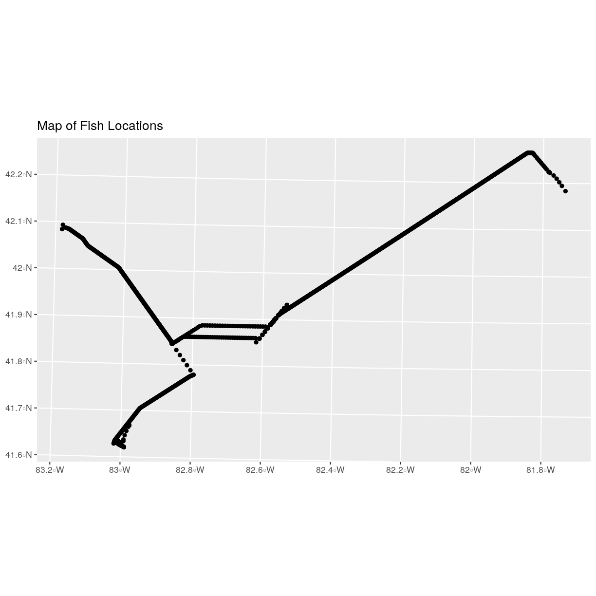
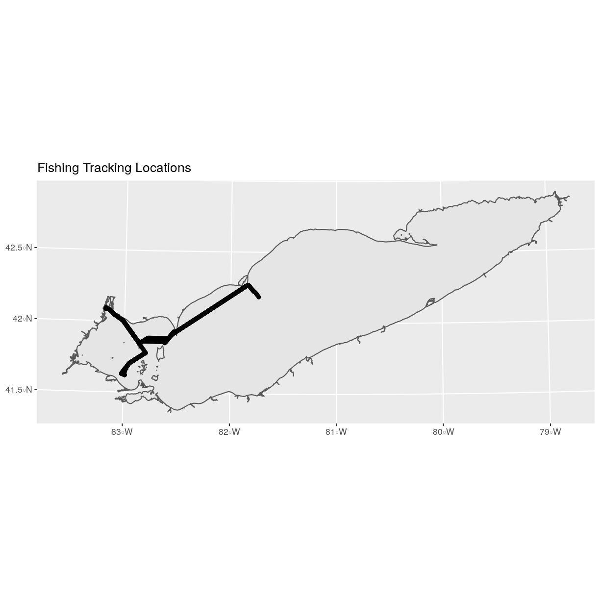

Convert from .csv to a Shapefile in R
Overview
Teaching: 40 min
Exercises: 20 minQuestions
How can I import CSV files as shapefiles in R?
Objectives
Import .csv files containing x,y coordinate locations into R as a data frame.
Convert a data frame to a spatial object.
Export a spatial object to a text file.
## Loading required package: sp
Things You’ll Need To Complete This Episode
See the lesson homepage for detailed information about the software, data, and other prerequisites you will need to work through the examples in this episode.
This episode will review how to import spatial points stored in .csv (Comma Separated Value) format into R as an sf spatial object. We will also reproject data imported from a shapefile format, export this data as a shapefile, and plot raster and vector data as layers in the same plot.
Spatial Data in Text Format
The Two_Interpolated_Fish_Tracks_utm.csv file contains x, y (point) locations from a fish tracking study in Lake Erie.
We would like to:
- Create a map of these plot locations.
- Export the data in a
shapefileformat to share with our colleagues. This shapefile can be imported into any GIS software. - Create a map showing vegetation height with plot locations layered on top.
Spatial data are sometimes stored in a text file format (.txt or .csv). If
the text file has an associated x and y location column, then we can
convert it into an sf spatial object. The sf object allows us to store both the x,y values that represent the coordinate location
of each point and the associated attribute data - or columns describing each
feature in the spatial object.
We will continue using the sf and raster packages in this episode.
Import .csv
To begin let’s import a .csv file that contains fish tracking coordinate x, y
locations in Lake Erie (Two_Interpolated_Fish_Tracks_utm.csv) and look at the
structure of that new object:
fish_tracks <-
read.csv("data/Two_Interpolated_Fish_Tracks_utm.csv")
str(fish_tracks)
'data.frame': 1366 obs. of 6 variables:
$ animal_id : int 16176001 16176001 16176001 16176001 16176001 16176001 16176001 16176001 16176001 16176001 ...
$ bin_timestamp: Factor w/ 1226 levels "2014-05-06 04:59:17",..: 1 2 2 3 4 5 6 7 8 9 ...
$ record_type : Factor w/ 2 levels "detection","interpolated": 1 1 1 2 1 2 2 2 2 2 ...
$ X : num 335496 334227 335496 334107 335496 ...
$ Y : num 4614819 4609585 4614819 4611017 4614819 ...
$ utmZone : int 17 17 17 17 17 17 17 17 17 17 ...
We now have a data frame that contains 1366 location observations (rows) and 6 variables (attributes). Note that all of our character data was imported into R as factor (categorical) data. Next, let’s explore the dataframe to determine whether it contains columns with coordinate values. If we are lucky, our .csv will contain columns labeled:
- “X” and “Y” OR
- Latitude and Longitude OR
- easting and northing (UTM coordinates)
Let’s check out the column names of our dataframe.
names(fish_tracks)
[1] "animal_id" "bin_timestamp" "record_type" "X"
[5] "Y" "utmZone"
Identify X,Y Location Columns
Our column names include several fields that might contain spatial information. The fish_tracks$X
and fish_tracks$Y columns contain coordinate values. We can confirm
this by looking at the first six rows of our data.
head(fish_tracks$X)
[1] 335496.0 334227.4 335496.0 334107.1 335496.0 335496.0
head(fish_tracks$Y)
[1] 4614819 4609585 4614819 4611017 4614819 4614819
We have coordinate values in our data frame. In order to convert our
data frame to an sf object, we also need to know the CRS
associated with those coordinate values.
There are several ways to figure out the CRS of spatial data in text format.
- We can check the file metadata in hopes that the CRS was recorded in the data.
- We can explore the file itself to see if CRS information is embedded in the file header or somewhere in the data columns.
It is not typical to store CRS information in a column. But this particular
file contains CRS information this way. The geodeticDa and utmZone columns
contain the information that helps us determine the CRS:
geodeticDa: WGS84 – this is geodetic datum WGS84utmZone: 17
In
When Vector Data Don’t Line Up - Handling Spatial Projection & CRS in R
we learned about the components of a proj4 string. We have everything we need
to assign a CRS to our data frame.
To create the proj4 associated with UTM Zone 18 WGS84 we can look up the
projection on the Spatial Reference website, which contains a list of CRS formats for each projection. From here, we can extract the proj4 string for UTM Zone 18N WGS84.
However, if we have other data in the UTM Zone 17N projection, it’s much
easier to use the st_crs() function to extract the CRS in proj4 format from
that object and assign it to our new spatial object. We’ve seen this CRS before
with our Lake Erie outline (erie_outline).
st_crs(erie_outline)
Coordinate Reference System:
No EPSG code
proj4string: "+proj=utm +zone=17 +ellps=GRS80 +units=m +no_defs"
The output above shows that the points shapefile is in
UTM zone 17N. We can thus use the CRS from that spatial object to convert our
non-spatial dataframe into an sf object.
Next, let’s create a crs object that we can use to define the CRS of our
sf object when we create it.
utm17nCRS <- st_crs(erie_outline)
utm17nCRS
Coordinate Reference System:
No EPSG code
proj4string: "+proj=utm +zone=17 +ellps=GRS80 +units=m +no_defs"
class(utm17nCRS)
[1] "crs"
.csv to sf object
Next, let’s convert our dataframe into an sf object. To do
this, we need to specify:
- The columns containing X (
easting) and Y (northing) coordinate values - The CRS that the column coordinate represent (units are included in the CRS) - stored in our
utmCRSobject.
We will use the st_as_sf() function to perform the conversion.
fish_locations <- st_as_sf(fish_tracks, coords = c("X", "Y"),
crs = utm17nCRS)
We should double check the CRS to make sure it is correct.
st_crs(fish_locations)
Coordinate Reference System:
No EPSG code
proj4string: "+proj=utm +zone=17 +ellps=GRS80 +units=m +no_defs"
Plot Spatial Object
We now have a spatial R object, we can plot our newly created spatial object.
ggplot() +
geom_sf(data = fish_locations) +
ggtitle("Map of Fish Locations")

Plot Extent
In
Open and Plot Shapefiles in R
we learned about spatial object extent. When we plot several spatial layers in
R using ggplot, all of the layers of the plot are considered in setting the boundaries
of the plot. To show this, let’s plot our erie_outline object with our vegetation plots.
ggplot() +
geom_sf(data = erie_outline) +
geom_sf(data = fish_locations) +
ggtitle("Fishing Tracking Locations")

When we plot the two layers together, ggplot sets the plot boundaries
so that they are large enough to include all of the data included in all of the layers.
That’s really handy!
Challenge - Import & Plot Additional Points
We want to add two phenology plots to our existing map of vegetation plot locations.
Import the .csv:
HARV/HARV_2NewPhenPlots.csvinto R and do the following:
- Find the X and Y coordinate locations. Which value is X and which value is Y?
- These data were collected in a geographic coordinate system (WGS84). Convert the dataframe into an
sfobject.- Plot the new points with the plot location points from above. Be sure to add a legend. Use a different symbol for the 2 new points!
If you have extra time, feel free to add roads and other layers to your map!
Answers
1) First we will read in the new csv file and look at the data structure.
newfish_tracks <- read.csv("data/NEON-DS-Site-Layout-Files/HARV/HARV_2NewPhenPlots.csv")Warning in file(file, "rt"): cannot open file 'data/NEON-DS-Site-Layout-Files/ HARV/HARV_2NewPhenPlots.csv': No such file or directoryError in file(file, "rt"): cannot open the connectionstr(newfish_tracks)Error in str(newfish_tracks): object 'newfish_tracks' not found2) The US boundary data we worked with previously is in a geographic WGS84 CRS. We can use that data to establish a CRS for this data. First we will extract the CRS from the
country_boundary_USobject and confirm that it is WGS84.geogCRS <- st_crs(country_boundary_US)Error in st_crs(country_boundary_US): object 'country_boundary_US' not foundgeogCRSError in eval(expr, envir, enclos): object 'geogCRS' not foundThen we will convert our new data to a spatial dataframe, using the
geogCRSobject as our CRS.newPlot.Sp.HARV <- st_as_sf(newfish_tracks, coords = c("decimalLon", "decimalLat"), crs = geogCRS)Error in st_as_sf(newfish_tracks, coords = c("decimalLon", "decimalLat"), : object 'newfish_tracks' not foundNext we’ll confirm that the CRS for our new object is correct.
st_crs(newPlot.Sp.HARV)Error in st_crs(newPlot.Sp.HARV): object 'newPlot.Sp.HARV' not foundWe will be adding these new data points to the plot we created before. The data for the earlier plot was in UTM. Since we’re using
ggplot, it will reproject the data for us.3) Now we can create our plot.
ggplot() + geom_sf(data = fish_locations, color = "orange") + geom_sf(data = newPlot.Sp.HARV, color = "lightblue") + ggtitle("Map of All Plot Locations")Error in fortify(data): object 'newPlot.Sp.HARV' not found
Export a Shapefile
We can write an R spatial object to a shapefile using the st_write function
in sf. To do this we need the following arguments:
- the name of the spatial object (
fish_locations) - the directory where we want to save our shapefile
(to use
current = getwd()or you can specify a different path) - the name of the new shapefile (
PlotLocations_HARV) - the driver which specifies the file format (ESRI Shapefile)
We can now export the spatial object as a shapefile.
st_write(fish_locations,
"data/fish_locations.shp", driver = "ESRI Shapefile")
Key Points
Know the projection (if any) of your point data prior to converting to a spatial object.
Convert a data frame to an
sfobject using thest_as_sf()function.Export an
sfobject as text using thest_write()function.